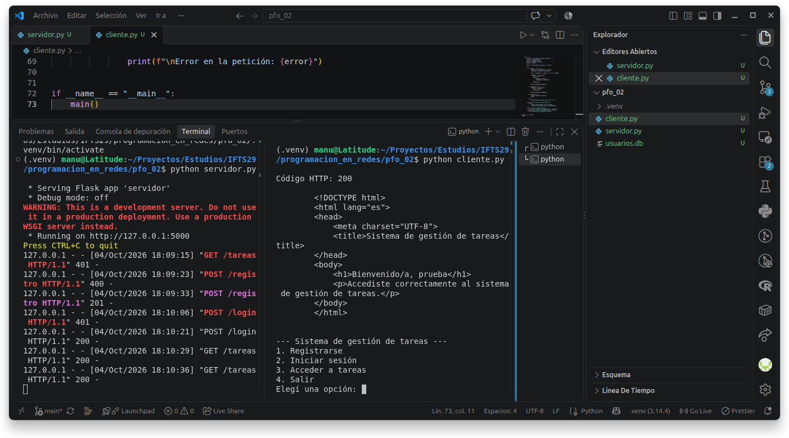

PFO 2 — Programación en Redes — IFTS N.º 29
Aplicación cliente-servidor desarrollada con Python, Flask y SQLite. Permite registrar usuarios, iniciar sesión y acceder a una bienvenida protegida. Las contraseñas se almacenan como hashes.
El cliente de consola utiliza Requests para comunicarse mediante HTTP y conserva la cookie de sesión.
| Método | Ruta | Función |
|---|---|---|
| POST | /registro | Registro de usuarios con contraseñas hasheadas. |
| POST | /login | Verificación de credenciales e inicio de sesión. |
| GET | /tareas | Bienvenida HTML para usuarios autenticados. |
La captura muestra el registro exitoso (201), el inicio de sesión exitoso (200) y el acceso autorizado a la bienvenida (200). También muestra el rechazo de acceso sin sesión y de credenciales incorrectas (401).

El hash evita guardar la contraseña en texto plano. Si alguien accede a la base de datos, no puede leerla directamente. Werkzeug genera el hash con una sal aleatoria y permite verificar la contraseña ingresada sin recuperar la original. Las contraseñas débiles aún pueden ser vulnerables a intentos de adivinación.
No requiere un servidor independiente, guarda los datos en un archivo y está integrado con Python. Ofrece persistencia, consultas SQL, restricciones y transacciones, por lo que resulta adecuado para el alcance de este proyecto.
Esta página presenta la entrega y sus evidencias. Para ejecutar la API Flask y el cliente, seguí las instrucciones del README. GitHub Pages no ejecuta el servidor Python.